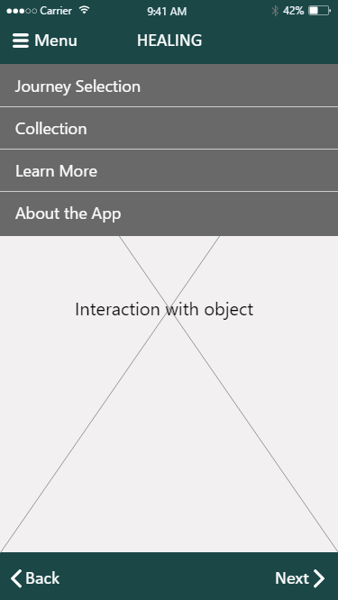

Background
The service and the current onboarding
CV1.0 was a software enabled service company running college application guidance programs for high school students. The service is a structured curriculum administered by a human advisor, and the software is used for generating students’ application plans based on data and proprietary algorithms. In order to start the program, the student needs to sign up for the web-based software platform, enter some information, and get paired with a human advisor. We call this process before the first meeting between the student and advisor onboarding. .
The Problem
Clients waited too long
The existing onboarding process takes longer than promised. Students need to wait a long time before knowing who their advisor is and having their first meeting. For high school students and their parents who are under the stress of college applications, this is especially frustrating. Bad first impression from onboarding hurts the business with customer service issues, escalations, and cancellations.
Diagonosing the Current Situation
Interviewing the operations team
To find out why the current onboarding process is taking so long, I started off by interviewing the operations team at the company – the folks who conduct the process every day and knows the problem the best. I conducted whiteboarding sessions with three operational managers from our three different program. Together we mapped out the current end-to-end workflow from a client signing the contract to the first time they meet with an advisor, and identified pain points along the way.
It turns out that each stage of the onboarding process has different problems that contribute to the delay:
-
Sales/operation data integration is error prone
Sometimes client contract data can be missing during the process of being transmitted from the sales forms to the tools used by operations, which means sometimes operation doesn’t even know that there is a new client that needs to be paired with an advisor
-
Information needed to pair an advisor with a student is scattered across many different tools, making the manual pairing process complicated
To match a student with an advisor, folks at operations need to know about the advisor’s availability, their time zones, and if the student has any special requirements for genders or backgrounds. Astonishingly, these pieces of information are stored across eight different tools, making the pairing process unscalable.
-
After the student and advisor are being paired in the system, there is no automated notifications or instructions for scheduling the first meeting
Once being paired with a new student, the advisor needs to manually send the student a self-introduction email and figure out a time for the first meeting by emailing back and forth. A lot of delays can happen in this process because neither the advisor (who is a college student) nor the students (who are still in high school) check their emails all the time.
-
Clients wait in a black box
On the client side, not only is their wait time long, but they also have no visibility into this critical part of their program. Waiting with no sense of control is very anxiety-inducing for clients.
Success Metrics
Through interviewing operations, I also identified the current time to first value (time from signing the contract to meet with an advisor) as a baseline for future comparisons. It turns out that it takes 3-5 days on average for the student to be paired, and another 9 days from being paired to scheduling the first meeting successfully. This was a big bottle neck for the business to increase customer satisfaction and decrease de-bookings.
Because time to first value is so important for the business, we set our success metrics as “95% of users can schedule first session within 48 hours of payment”.
Solution Exploration
We conducted one round of in-person usability testing in the summer and it helped us resolve our mobile app navigation. In the initial design, we used the commonly adopted bottom navigation bar and top status bar with a back button. In our new design, we have eight chapters and each chapter contains an introduction page, an object page, and an interaction page. There is increased need to go back and forward between these pages. iPhones are also getting bigger and I started to see iOS apps put important functionalities at the bottom closer to the thumb. We decided to put back and forward buttons at the bottom and use the infamous hamburger menu to contain pages that will not be frequently used.
We asked users to compare the two navigation models with prototypes and found that the bottom back and forth button with hamburger menu is preferred. In our latest testing with the launched app, over 85% of users do not have any difficulties navigating the app.
Before launching the app, we conducted 9 structured usability tests and guerrilla usability tests. We modified the app based on user feedback and summarized spaces for improvement for our clients.
Test Option 1

Test Option 2
Final Design

Solution Exploration
It was summer break after the big change in stakeholder requirements and app flow. I did an internship at Teletracking and designed the ipad app during my time after work. After deciding on the structure with stakeholders, I iterated on the visual design of the app and picked a Buddhist art inspired colorful palette to make it more eye-catching and fun.

Icon and Illustrations
I designed the icon for our apps and made illustrations to enhance the immersiveness of our interactions.